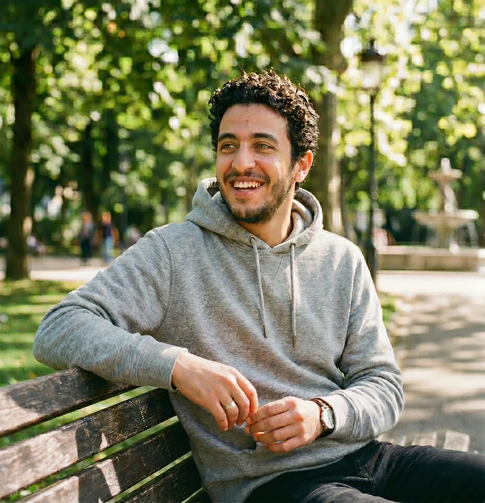
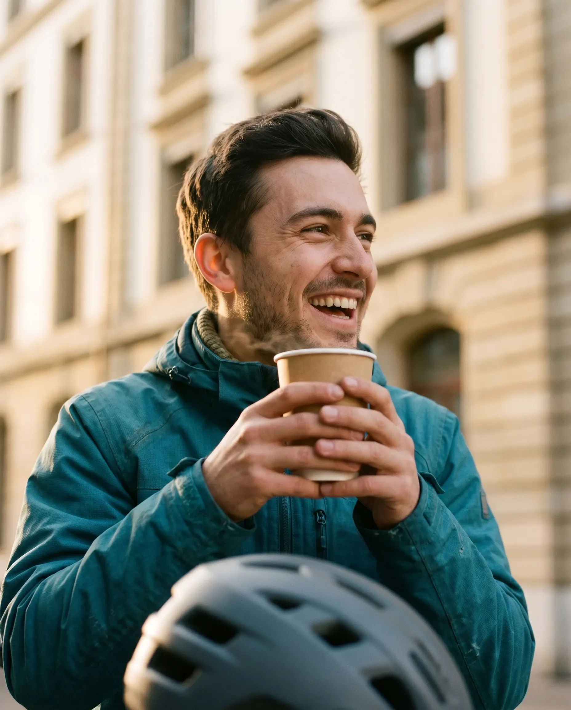
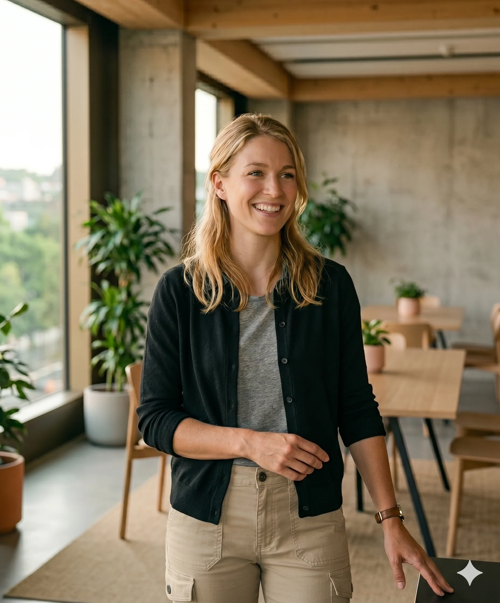

Le premier jour, on m'a tendu un vélo, une veste, un sac. Zéro caution, zéro contrat auto-entrepreneur à signer avant de partir. Tu commences ta journée, pas ton business plan.
Coursier à vélo ou chauffeur, on vous fait confiance dès le premier jour. CDI, matériel fourni, assurance complète. Canton de Genève et canton de Vaud. Frontaliers bienvenus.

Pas de jargon. Juste ce que vous vivez, comparé à ce que vous avez peut-être connu.
Coursier à vélo ou chauffeur, CDI dès le premier jour dans les deux cas.
Genève, Nyon, Lausanne et la Riviera. Temps plein ou complément de revenus.
Transferts, livraisons longue distance. Genève et canton de Vaud.
Six collègues. Six histoires. Six parcours.

Le premier jour, on m'a tendu un vélo, une veste, un sac. Zéro caution, zéro contrat auto-entrepreneur à signer avant de partir. Tu commences ta journée, pas ton business plan.
Avant, j'enchaînais les courtes missions en auto-entrepreneuse, jamais sûre du mois d'après. Ici c'est un CDI, des horaires, un salaire fixe. J'ai pu signer un bail sans qu'on me regarde de travers.
La vraie différence, c'est qu'au bout du fil il y a toujours quelqu'un. Pas un ticket, pas un bot. Un collègue qui connaît mon prénom et qui règle le problème avec moi.

Chauffeure dans un métier qui reste très masculin, je m'attendais à devoir prouver deux fois plus. Chez Chaskis, personne ne m'a jamais fait sentir que j'avais quoi que ce soit à prouver. On me parle comme aux autres.
Les pourboires, ici, c'est 100% pour moi. Pas de "frais de gestion", pas de pourcentage prélevé au passage. C'est écrit noir sur blanc dans le contrat, et ça change tout à la fin du mois.
Pneu crevé un mardi matin, un appel, quelqu'un m'apportait la roue. J'ai aussi accès à des tarifs préférentiels chez les magasins partenaires. Ce sont les petits trucs qu'on remarque après des années dans le métier.
Tout ce qu'il faut savoir avant de postuler. Une autre question ? Écrivez-nous.
Un permis de travail valable en Suisse est requis.
Salaire horaire fixe conforme à la CCT suisse, plus primes de performance et pourboires 100% reversés. La fourchette exacte est communiquée lors de l'entretien.
Planning mensuel construit avec vous selon vos disponibilités. Compatible études, enfants, complément d'activité ou temps plein.
Aucun. Coursiers : vélo, sac isotherme, veste et téléphone fournis dès le premier jour. Chauffeurs : véhicule selon le poste ou frais remboursés.
Candidature via l'app, retour rapide de notre équipe, puis entretien dans la semaine. Formation initiale incluse avant la première mission.
Une seule app Chaskis pour candidater comme coursier ou chauffeur. Notre équipe vous revient rapidement.